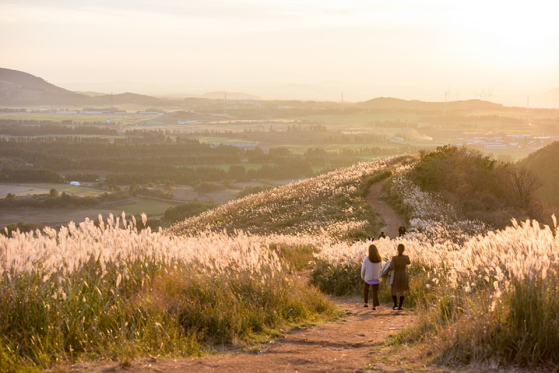
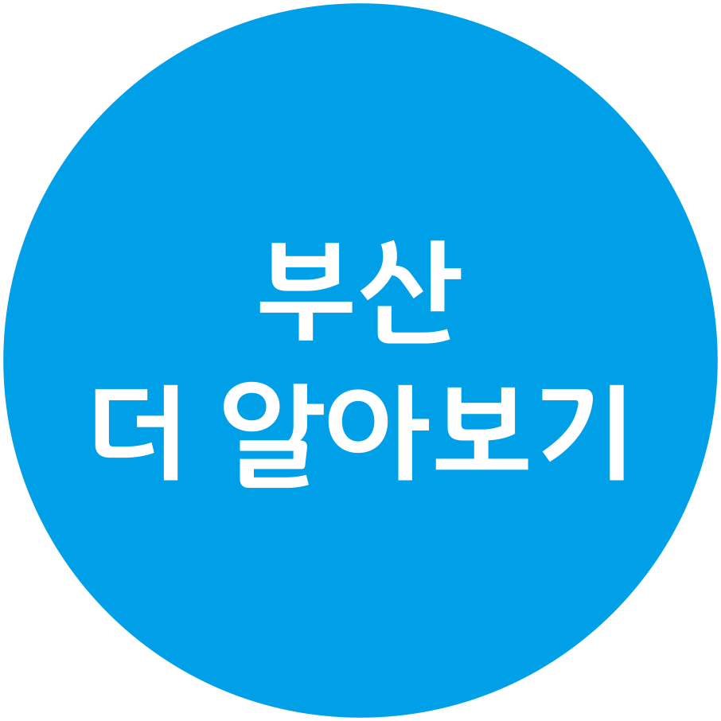

[첫번째 여행지]
제주도
제주도 지도

제주의 날씨
제주의 봄은 포근한 공기와 따뜻한 햇살이 함께해 여행의 최적기로 꼽힌다.
3월의 평균 최고기온은 12.8℃ 평균 최저기온은 6.1℃, 4월의 평균 최고기온은 17.5℃ 평균 최저기온은 10.2℃, 5월의 평균 최고기온은 21.6℃, 평균 최저기온은 14.4℃의 온화한 날씨를 보인다.
덕분에 매화를 시작으로 유채꽃, 벚꽃 등 모두 나열할 수 없을 만큼 많은 생명들이 움트는 제주의 봄. 이를 시샘하는 3~4월의 꽃샘추위를 제외하면 따사로운 기운이 맴돈다.
하지만, 일교차가 심한 날들이 많으니 얇은 겉옷이나 스카프 등을 반드시 챙기도록 하자.
제주의 여름은 내리쬐는 햇볕과 시원한 바다의 풍경이 어우러지는 계절이다.
6월의 평균 최고기온은 24.8℃ 평균 최저기온은 18.7℃, 7월의 평균 최고기온은 29℃ 평균 최저기온은 23.3℃, 8월의 평균 최고기온은 29.8℃ 평균 최저기온은 24.3℃로 더운 날씨가 이어진다.
또한, 평균 강수량 6월 181.4mm, 7월 239.9mm, 8월 262.5mm, 평균 습도가 76.8%, 78.3%, 76.5%로 습하며, 장마로 인한 폭우나 태풍이 오는 경우가 있어 여행 중 주의가 필요하다.
하지만 후덥지근한 날씨에서 벗어날 수 있는 바다, 폭포, 숲 등이 펼쳐져 있어, 제주의 여름은 더욱 반짝인다.
하늘은 높고 제주의 말들은 살찌는 천고마비의 계절, 제주의 가을.
제주의 9월의 평균 최고기온은 25.8℃ 평균 최저기온은 20.4℃, 10월의 평균 최고기온은 21.3℃ 평균 최저기온은 15.1℃, 11월의 평균 최고기온은 16℃ 평균 최저기온은 9.8℃으로 선선하다.
초가을에 집중적으로 내리는 가을비를 제외하면 습하지 않고 쾌청하다. 밤낮으로 큰 일교차에 대비해 가벼운 겉옷을 준비한다면, 단풍으로 물들고 억새가 흐드러진 길을 시간 간 줄 모른 채 걷게 될 것이다.
포근한 제주에도 겨울은 온다.
제주의 12월 평균 최고기온은 11.0℃ 평균 최저기온은 5.3℃, 1월 평균 최고기온은 8.3℃ 평균 최저기온은 3.2℃, 2월 평균 최고기온은 9.4℃ 평균 최저기온은 3.6℃이다.
가장 추운 1월의 평균기온이 5.7℃ 일 만큼, 영하 기온으로 내려가는 날이 비교적 적다. 하지만 삼다도 제주의 바람은 무시하지 못한다. 바람이 매섭고 잦아, 체감온도는 더욱 떨어지는 경우가 많다.
따뜻한 옷차림을 갖추고, 특히 눈꽃 트레킹을 떠난다면 더더욱 방한용품 준비를 단단히 해야 한다. 또한, 평균 강수량이 12월 47.7mm, 1월 65.2mm, 2월 62.6mm,
평균 습도가 1월 65.1%, 2월 65.3%, 3월 64.9%로 건조한 편이니 산불 등에 유의하자.
| 봄 | 여름 | 가을 | 겨울 |
|---|---|---|---|
|
산방산의 유채꽃 |
천제연폭포 |
마노르블랑 |
사려니숲길 |

섭지코지 |

월정리해변 |
 샛별오름 |
카멜리아힐 |
제주도 홍보영상
[두번째 여행지]
부산
부산 관광 지도

부산 테마여행
| 맛집투어 | 낭만투어 |
|---|---|
깡통야시장 남포동 길거리 음식 

부산밀면 떡볶이 |
광안리 감천문화마을 

해동용궁사 아홉산숲 
|
부산 관광 e-book
PDF 다운로드부산 홍보영상

[세번째 여행지]
경주
경주 미리보기


경주 관광 포인트

불국사 |
석굴암 |

천마총 |
첨성대 |
|---|

중앙시장 |

경주밀면 |

묵 해장국 |

황남빵 |
|---|

야경 |
놀이공원 |
추억의달동네 |
보문콜로세움 |
|---|
경주 홍보영상
[그 외 여행지]
강릉
가평
전주
.
.
.
제공된 정보에 만족하십니까?

눌러서 설문 열기
1. 유익한 정보를 얻었다.
| 그렇다 | 조금 그렇다 | 보통이다 | 조금 아니다 | 전혀 아니다 |
2. 제주도 또는 경주에 놀러가고 싶은 마음이 생겼다.
| 그렇다 | 조금 그렇다 | 보통이다 | 조금 아니다 | 전혀 아니다 |